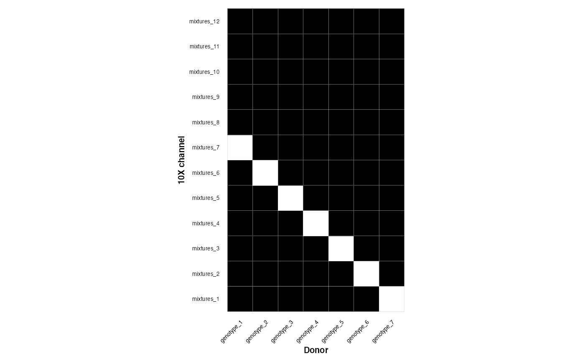
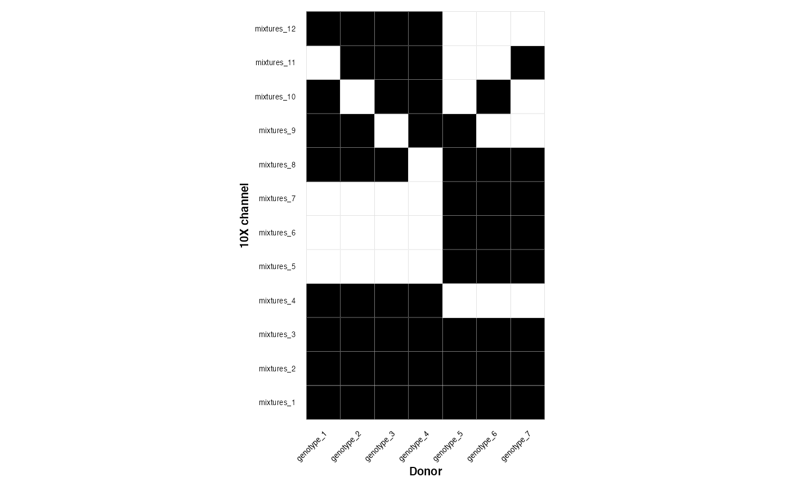
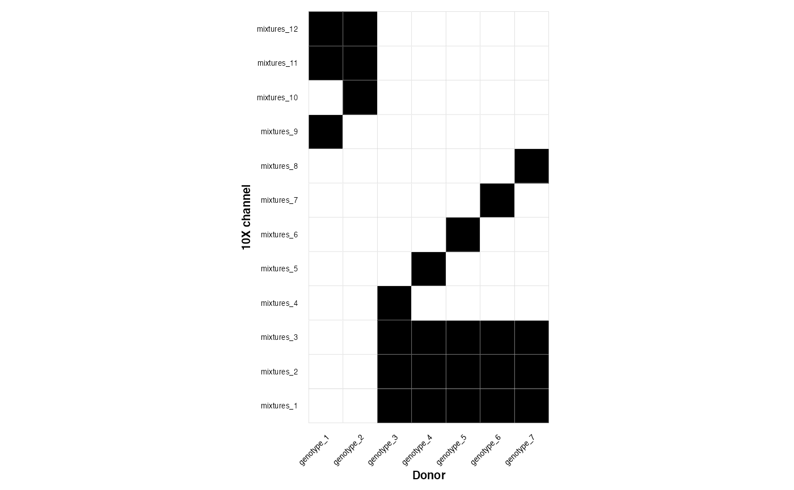

Introduction to GenotypeMixtures
2021-07-19
introduction.RmdGenotypeMixtures is a handy package that builds on the souporcell package (Heaton et al. 2020), to stitch together genotypes across multiple single cell genomics experiments with an overlapping mixture experimental design…
Install GenotypeMixtures from github. Requires devtools.
#devtools::install_github("bjstewart1/GenotypeMixtures")Load GenotypeMixtures
library(GenotypeMixtures)Experimental designs can be read in using this function if you point at a .csv Alternatively you can read in the .csv however you like, or construct from another file The experiments (10X channels (mixtures) should be rows, and the donors/genotypes should be columns. Membership is denoted by 1 vs 0.
exp_design_path = system.file("extdata", "experimental_design.csv", package = "GenotypeMixtures")
experimental_design <- read_experimental_design(experimental_design_path = exp_design_path)
plot_experimental_design(experimental_design)
We can also read in the locations of the souporcell directories The first column should be the mixture name, the second column should be the path to the soup or cell directory There is some built in dummy vcf files in the package for this vignette
file_locations <- data.frame("channel" = rownames(experimental_design),
"SOC_directory" = file.path(system.file("extdata", package = "GenotypeMixtures"), rownames(experimental_design) ))
head(file_locations)
#> channel
#> 1 mixtures_1
#> 2 mixtures_2
#> 3 mixtures_3
#> 4 mixtures_4
#> 5 mixtures_5
#> SOC_directory
#> 1 /Users/runner/work/_temp/Library/GenotypeMixtures/extdata/mixtures_1
#> 2 /Users/runner/work/_temp/Library/GenotypeMixtures/extdata/mixtures_2
#> 3 /Users/runner/work/_temp/Library/GenotypeMixtures/extdata/mixtures_3
#> 4 /Users/runner/work/_temp/Library/GenotypeMixtures/extdata/mixtures_4
#> 5 /Users/runner/work/_temp/Library/GenotypeMixtures/extdata/mixtures_5Now we plug this into the main function which constructs a genotype cluster graph
genotype_clustering_output <- construct_genotype_cluster_graph(experimental_design = experimental_design, file_locations = file_locations )
#>
|
| | 0%
|
|======= | 10%
|
|============== | 20%
|
|===================== | 30%
|
|============================ | 40%
|
|=================================== | 50%
|
|========================================== | 60%
|
|================================================= | 70%
|
|======================================================== | 80%
|
|=============================================================== | 90%
|
|======================================================================| 100%Now we can plot the graph which stitches together the genotypes
genotype_clustering_output$graph_plotNow we can plot the membership matrix which tells us which of our genotypes belongs to which mixtures
genotype_clustering_output$membership_plotNow we can plot genotype VAFs - this is a useful diagnostic plot; matching genotypes should have their variants along the diagnonal. This is synthetic data, but real data should look reasonably similar to this
plot_cross_vaf(experiment_1_path = file_locations[2, 2],
experiment_2_path = file_locations[3,2],
experiment_1_name = file_locations[2,1],
experiment_2_name = file_locations[3,1])We can map these computed genotypes back to the original genotypes in our experimental design
cluster_mapping <- membership_map(experimental_design = experimental_design,
graph_output = genotype_clustering_output)
tail(cluster_mapping)
#> channel SOC_cluster genotype_cluster genotype
#> 26 mixtures_2 mixtures_2_4 3 genotype_8
#> 27 mixtures_4 mixtures_4_4 3 genotype_8
#> 28 mixtures_5 mixtures_5_4 3 genotype_8
#> 29 mixtures_3 mixtures_3_4 1 genotype_9
#> 30 mixtures_4 mixtures_4_5 1 genotype_9
#> 31 mixtures_5 mixtures_5_5 1 genotype_9Finally we can assign single cells across our experiments to genotype - feed the output of membership_map() to cells_to_genotypes The output of this can be easily added to the metadata of your single cell experiment/seurat/anndata object
cell_assignments <- cells_to_genotypes(SOC_locations = file_locations,
membership_mat =cluster_mapping)
tail(cell_assignments)
#> barcodes status assignment channel genotype SOC_cluster
#> 23993 CAGCCGATCGTAGGAG-1 singlet 3 mixtures_5 genotype_7 mixtures_5_3
#> 23994 ACACTGAAGCTCCTTC-1 singlet 0 mixtures_5 genotype_2 mixtures_5_0
#> 23995 CATGCCTCACCTCGGA-1 singlet 5 mixtures_5 genotype_9 mixtures_5_5
#> 23996 CCTACCACAAATACAG-1 singlet 0 mixtures_5 genotype_2 mixtures_5_0
#> 23997 AGATTGCTCTCCTATA-1 singlet 0 mixtures_5 genotype_2 mixtures_5_0
#> 23998 CCAGCGACATGGTTGT-1 singlet 1 mixtures_5 genotype_4 mixtures_5_1The package can also output an experimental design with varying levels of density
dense_design <- make_overlapping_mixture(n_mixtures = 12, n_genotypes = 7, density = 1 )
medium_density_design <- make_overlapping_mixture(n_mixtures = 12, n_genotypes = 7, density = 0.5 )
sparse_design <- make_overlapping_mixture(n_mixtures = 12, n_genotypes = 7, density = 0 )This is a dense design
plot_experimental_design(dense_design)
#> Using channel as id variables
This is a medium design
plot_experimental_design(medium_density_design)
#> Using channel as id variables
This is a sparse design
plot_experimental_design(sparse_design)
#> Using channel as id variables